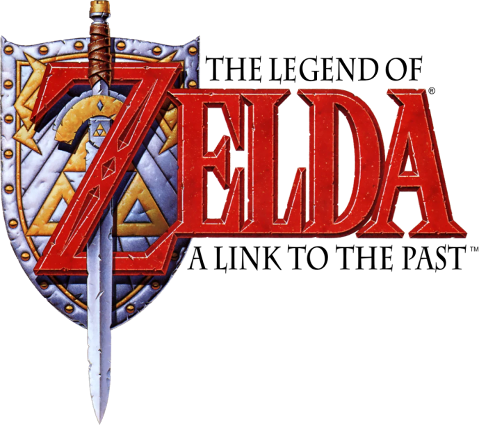
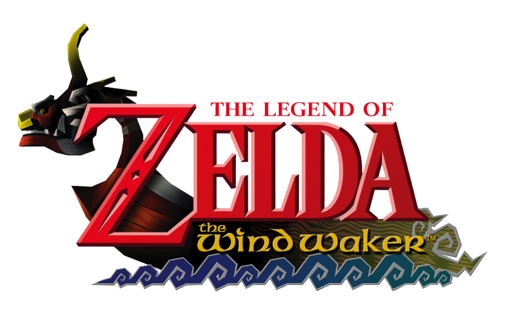

-
Within the official Zelda Chronology, The Legend of Zelda takes place in an Era called "The Era of Decline", which exists within an alternative reality. In this era, Hyrule has been reduced to a small kingdom where the residents now live in caves, setting the background for The Legend of Zelda
-


Players assume the role of series protagonist Link, a young man living with his uncle south of Hyrule Castle. Princess Zelda, a descendant of the Seven Sages, is held captive in the castle dungeon by Agahnim, a treacherous wizard who has set forth a chain of events to release his dark master. Sahasrahla, a descendant of those who forged the Master Sword, mentors Link on his quest.Series antagonist Ganon remains sealed in the Dark World, the former Sacred Realm corrupted by his evil magic. It is revealed late in the game that Agahnim is an avatar of Ganon, used by the King of Evil to infiltrate the Light World.
-
Unlike most The Legend of Zelda titles, Link's Awakening is set outside the kingdom of Hyrule. It omits locations and characters from previous games, aside from protagonist Link and a passing mention of Princess Zelda. Instead, the game takes place entirely on Koholint Island, an isolated landmass cut off from the rest of the world. The island, though small, contains a large number of secrets and interconnected pathways.Within the Zelda timeline, Link's Awakening takes place after Ocarina of Time and A Link to the Past, but before Oracle of Seasons and Ages. In Link's Awakening, the player is given advice and directions by non-player characters such as Ulrira, a shy old man who communicates with Link exclusively by telephone. The game contains cameo appearances by characters from other Nintendo titles, such as Wart, Yoshi, Kirby, Dr. Wright (renamed Mr. Write) from the Super NES version of SimCity, and the exiled prince Richard from The Frog for Whom the Bell Tolls. Chomp, an enemy from the Mario series, was included after a programmer gave Link the ability to grab the creature and take it for a walk. Enemies from Super Mario Bros. such as Goombas and Piranha Plants also appear in underground side-scrolling sections; Link may land on top of them much as with Super Mario Bros., or he can attack them in the usual way: the two methods yield different bonuses. Director Takashi Tezuka said that the game's "freewheeling" development made Link's Awakening seem like a parody of The Legend of Zelda series. Certain characters in the game break the fourth wall; for example, little children inform the player of game mechanics such as saving, but admit that they do not understand the advice they are giving.
-

Ocarina of Time is set in the fictional kingdom of Hyrule, the setting of most Legend of Zelda games. Hyrule Field serves as the central hub connected to several outlying areas with diverse topography and the races of Hyrule.
-
The Legend of Zelda: Majora's Mask is set in Termina, a land parallel to Hyrule, the main setting of most Zelda games. Termina is a world that is trapped within a perpetual three day limbo, between the time when Link first enters Termina at the beginning of Majora's Mask, and when a large falling moon crashes into the land causing its apocalyptic destruction and killing its inhabitants 72 hours later. The Skull Kid, a former inhabitant of Hyrule, obtains Majora's Mask and wills Termina into existence, due to the evil power of the mask combined with Skull Kid's heavy heart. The residents of Termina, who are created from the Skull Kid's memories, resemble the residents of Hyrule featured in Ocarina of Time, and possess their own unique culture and myths.
-

According to The Legend of Zelda: Hyrule Historia, Nintendo's official Legend of Zelda chronology, The Wind Waker takes place in the "New World" timeline, one of several parallel timelines in which Zelda games are set following the events of Ocarina of Time. The game follows the "Adult Link" timeline, after Link, the "Hero of Time", defeats Ganon and time-travels back to his childhood. A crisis emerges when Ganon returns, but Link does not. Centuries later, the people live on islands in the Great Sea. They preserve Link's story as a legend, but his kingdom's fate is unknown. The main character, a young boy also named Link, lives on Outset Island, where boys dress in green like the Hero of Time when they come of age.
-
The game begins with a teenage boy named Link, who works as a ranch hand in Ordon Village. One day, Bulblins take away the village's children. Link pursues and encounters a wall of Twilight. A Twilight monster pulls him beyond the wall into the Twilight-shrouded forest, where he is transformed into a wolf and imprisoned. Link is soon freed by a creature named Midna, who offers to help him if he obeys her unconditionally. She guides him to Princess Zelda, who explains that Zant, the Sorcerer/Usurper King of the Twili, invaded Hyrule Castle and forced her to surrender. The kingdom became enveloped in Twilight, turning all its inhabitants besides Link and Zelda into invisible spirits. To save Hyrule, Link, aided by Midna, must first revive the Light Spirits by entering the Twilight-covered regions and recovering the Spirits' light from the Twilight beings that had stolen it. Once revitalized, each Spirit returns Link to his Hylian form and informs Link and Midna of the hidden location of a Fused Shadow, one of the fragments of a powerful relic that will have to be used to match Zant's power to defeat him. During this time, the ghost of a departed swordsman, the Hero's Shade, also appears to provide swordsmanship training he had failed to pass on before his untimely death, as well as information regarding Link's destiny in Hyrule.
-
Skyward Sword takes place at the beginning of the Zelda continuity:according to legend, three ancient Goddesses bestowed a great wish-granting power: the Triforce. The Demon King Demise, a deity who had conquered time itself, laid waste to much of the land seeking to take the Triforce. The Goddess Hylia gathered the survivors and sent them into the sky, allowing her to launch a full-scale offensive against Demise. She was victorious, but the land was severely damaged. Uncounted years later, the outcrop is known as Skyloft, and its people believe the surface below is a myth.
-
Breath of the Wild takes place at the end of the Zelda timeline in the kingdom of Hyrule. In ancient times long before the beginning of the game, the ancient Sheikah race had developed Hyrule into an advanced civilization, protected by four enormous animalistic machines called the Divine Beasts and an army of autonomous weapons called Guardians. When the evil Calamity Ganon appeared and threatened Hyrule, four great warriors were given the title of Champion, and each piloted one of the Divine Beasts to weaken Ganon while the princess with the blood of the goddess and her appointed knight fought and defeated him by sealing him away. 10,000 years later, the kingdom of Hyrule had since regressed to a medieval state. Reading their ancestors' prophecies, the Hylians recognized the signs of Ganon's return and excavated surrounding areas to uncover the Divine Beasts and Guardians. During this time, Princess Zelda trained vigorously to awaken the sealing magic needed to defeat Ganon while trying to maintain her personal research. In the meantime, a knight was appointed to protect her: Link, who was chosen due to his ability to wield the Master Sword, also known as the Sword that Seals the Darkness. The champions of Hyrule's races — Daruk, warrior of the mountainous Goron; Mipha, princess of the aquatic Zora; Revali, archer of the birdlike Rito; and Urbosa, chief of the desert-dwelling Gerudo — assembled to pilot the Divine Beasts (Vah Rudania, Vah Ruta, Vah Medoh, and Vah Naboris, respectively) while the current Zelda and Link battled Ganon. However, Ganon possessed the Guardians and Divine Beasts, turning them against Hyrule. King Rhoam and the Champions were killed, the castle town was destroyed, and Link was gravely wounded while defending the Hyrulean Army's only remaining base, Fort Hateno. Zelda took Link to safety for him to heal, hid the Master Sword in the Lost Woods under protection from the Great Deku Tree, and used her magic to seal herself and Ganon in Hyrule Castle. This cataclysmic tragedy came to be known through the ages as the Great Calamity.